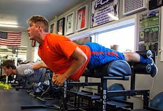

The Best Soccer Tips You Will Ever Read
Finding out how to become better at your soccer game is something you should always be working on as a soccer player. This article is here to help you with some valuable information. Keep reading to find out exactly what you can do to bring a better game onto that soccer field.
Practice whenever you get an opportunity. Take your ball wherever you go so you can get some practice in. Dribble or drag the ball with your feet when you need to walk between two different places. Curso de Coaching Deportivo Online
Your entire team should be committed to moving the ball across the field as often as possible. This will help space to open up and will give your team a better chance of scoring a goal. If your team is struggling to do this, watch footage of professional soccer teams. It should give you an idea of what you need to be doing.
Become friends with your teammates. This will help you communicate which in turn will help move the ball down the field quicker and more efficiently. Use hand signals or phrases that the opposing team will not understand, but your friends will know exactly what you are talking about. This secret arsenal will help you successfully win the game.
There are all different types of soccer shots, and you should try your best to use a variety of them. It may seem practical for you to use standard shots a lot of the time, but there are other times where it may be necessary to make a chip shot, inside shot, or some other type of shot.
Master the skill of the throw-in. This is one of the best chances to score a goal since the thrower has greater control over the ball. You must use both hands and the ball must go behind your head for a proper throw. This is a good time to use a strategic play to set up a player near the goal.
Practice your juggling skills at home with the soccer ball. Juggle off of your thigh once and catch the ball. Then, juggle twice and catch. Maintain your control, and keep repeating this process. Your game improves immensely as you get better at juggling. Anything like this you can do to help you control the ball better is important.
Teaching is a great way to learn. Teach the younger players on other teams, or focus on helping the younger or more inexperienced players on your own team. This helps validate your skills and can give you that extra confidence boost when playing against your opponents. Teach and you will learn.

As a soccer player, you need a good exercise regimen on the side of your regular practice and playing time. Core strengthening exercises are ideal, and can help you prepare for the hits you're going to take to your stomach at times. These exercises also help with your stamina to keep moving vs feeling tired and in pain.
Soccer is the perfect way to get your children to exercise while having fun. Soccer is a game that incorporates a lot of foot and eye coordination which helps build fine motor skills. Also because of the amount of running done during a soccer match, kids get the necessary cardiovascular exercises to stay healthy.
Keeping possession of the ball is crucial. You can't score a goal for your team if you don't have the ball. This means learning how to shield the ball from the opposing team until you have the chance to go for a goal or pass to a teammate. Watch video of professional soccer players and see how they shield against different types of approaches.
Don't doubt yourself. Doubting yourself can ruin your game. If you tell yourself you can't play soccer, it will become the truth. Always believe that you can achieve anything. You may not be very good at first or you may fail. That doesn't really matter as long as you learn from your mistakes.
Don't forget to have a good time. Soccer should be something you enjoy doing. If it is bringing you displeasure, it may not be the right sport for you. That's okay as long as you realize it and move on. If you reach a point where soccer is more painful than it is enjoyable, it's time to quit.
When you get the ball, take it and run it towards the goal. Otherwise you should get into a space that's open quickly. You will have to be fast if you desire to stay in front of your opponent. Never let those other players catch up to you. Compel those players to revert to a defensive role instead. Curso de Coaching Deportivo Online
One great way to improve your soccer skills is to drill shielding the ball. Instruct a teammate to try to get the ball away from you while you dribble the ball in a small square area. Always keep your body between your opponent and the ball as you move within the square.
Know when to use the instep shot. This is one very powerful and important shot. However, it is very often overused. It is easy to miss your chance of scoring a goal by choosing power when accuracy is needed, making another shot a better choice. The instep shot lets you use your power but is not always the best choice.
Now that you've learned how you can help improve your soccer game, it's time you started using the tips that have been described. Remember everything you have just read, and pursue this knowledge with daily practice. Soccer is a very passionate sport, and you can become a better player while having a ton of fun.